Menu
Schade, Afweer en Herstel1e Toetsmoment 2017‑2018
Examen inleveren
Weet je zeker dat je het examen afsluit?
Examen resetten
Al je antwoorden worden gewist en je begint opnieuw. Weet je het zeker?
Jouw resultaten
Schade, Afweer en Herstel · 1e Toetsmoment 2017‑2018
—
/ 70
0
Goed
0
Fout
0
Niet beantwoord
Vraag 1
Oom Jaap, die sinds jaren lijdt aan jicht, heeft weer een kloppende, pijnlijke, gezwollen grote teen, die hij nauwelijks kan bewegen. Hoeveel van de vijf kardinale tekenen van een acute ontsteking zijn hier genoemd?
Vraag 2
Intracytoplasmatische kristalvorming kan leiden tot activatie van het inflammasoom. Wat is hiervan het rechtstreekse gevolg?
Vraag 3
Welke gebeurtenis resulteert in transcytose van intravasculaire eiwitten, bij het ontstaan van een exudaat?
Vraag 4
Welke twee (groepen van) adhesiemoleculen mediëren de allereerste fase van leukocytenadhesie aan geactiveerd endotheel, waardoor de leukocyten rollen over het endotheel?
Meerdere antwoorden mogelijk.
Vraag 5
Welke groep van stoffen veroorzaakt activatie van leukocyten in het vaatlumen, maar ook migratie van leukocyten in het extravasculaire compartiment?
Vraag 6
Collectines en IgG, gebonden aan een pathogeen, bevorderen de…
Vraag 7
Neutrophil extracellular traps (NETs) bestaan uit…
Vraag 8
Een abces is een ernstige vorm van een…
Vraag 9
Welke twee groepen van arachidonzuurmetabolieten worden geproduceerd via de cyclo-oxygenaseroute?
Meerdere antwoorden mogelijk.
Vraag 10
Corticosteroïden inhiberen rechtstreeks de vorming van…
Vraag 11
Welke twee cytokines worden in een acute ontstekingsreactie lokaal door macrofagen geproduceerd, maar hebben ook effecten op afstand, zoals koorts, productie van acute-fase eiwitten en verhoogde productie van leukocyten in het beenmerg?
Meerdere antwoorden mogelijk.
Vraag 12
Stikstof monoxide, NO, wordt onder andere geproduceerd in geactiveerde macrofagen. Welke rol speelt het in deze cellen, en waar?
Vraag 13
Wat is de functie van acute-fase eiwitten zoals CRP en SAA?
Vraag 14
Kies de juiste alternatieven.
Complementfactoren worden gemaakt in en zorgen ervoor dat macrofagen.
Vraag 15
Wanneer de klassieke activatie van het complementsysteem niet functioneert, kan de auto-immuunziekte SLE ontstaan. Dit wordt veroorzaakt doordat er…
Vraag 16
LAD-1 is een afweerstoornis, die berust op een defect in…
Vraag 17
Het Chédiak-Higashi syndroom berust op een defect in…
Vraag 18
Welke twee functies heeft de M2-macrofaag?
Meerdere antwoorden mogelijk.
Vraag 19
Welke subset van T-cellen speelt een oorzakelijke rol bij het ontstaan van een type I hypersensitiviteitsreactie?
Vraag 20
IgE moleculen, gebonden aan één enkele mestcel, zijn...
Vraag 21
Een patiënt heeft verminderde expressie van receptoren voor bacteriën op zijn macrofagen. Dit resulteert in een…
Vraag 22
Waardoor ontwikkelt een patiënt met chronische granulomateuze ziekte granulomen?
Vraag 23
Het variabele gedeelte van een antilichaam bepaalt de uiteindelijke immunologische functie van het antilichaam.
Vraag 24
De B-cel receptor kan rechtstreeks aan antigenen op bacteriën binden.
Vraag 25
Immunoglobulinen zijn betrokken bij het verwijderen van parasieten door de binding aan de volgende twee receptoren/cellen:
Meerdere antwoorden mogelijk.
Vraag 26
De expressie van zowel IgM als IgD op B-cellen is een signaal dat B-cellen foutief uitrijpen.
Vraag 27
In het beenmerg worden B-cellen geselecteerd. Wanneer ze lichaamseigen antigenen herkennen moeten ze het beenmerg verlaten.
Vraag 28
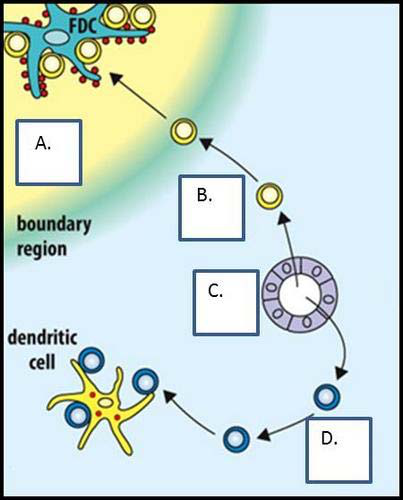
Hieronder staat een schematische weergave van een lymfeklier. Geef de juiste term aan bij de blokken A t/m D.
Sleep een optie naar de bijbehorende rij, of tik eerst op een kaart en dan op een rij.
A
Sleep hier naartoe
B
Sleep hier naartoe
C
Sleep hier naartoe
D
Sleep hier naartoe
Vraag 29
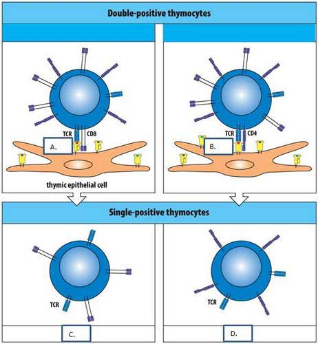
Tijdens de positieve selectie in de thymus worden T-cellen geselecteerd op hun vermogen om MHC-moleculen te herkennen. Zet de juiste term bij de blokken A t/m D.
Sleep een optie naar de bijbehorende rij, of tik eerst op een kaart en dan op een rij.
A
Sleep hier naartoe
B
Sleep hier naartoe
C
Sleep hier naartoe
D
Sleep hier naartoe
Vraag 30
Kies de juiste alternatieven.
Tijdens de positieve selectie worden alleen de T-cellen die aan eigen kunnen binden doorgelaten .
Vraag 31
Antigeenpresentatie in MHC-klasse I/MHC-klasse II moleculen is nodig voor de herkenning van antigenen door …
Vraag 32
Wat is de functie van hoog-endotheel venulen die aanwezig zijn in de lymfeklieren?
Vraag 33
Tijdens de negatieve selectie in de thymus worden T-cellen die eigen MHC-moleculen herkennen verwijderd.
Vraag 34
De BCR herkent zowel het peptide in MHC-moleculen als de MHC-moleculen zelf.
Vraag 35
Kies de juiste alternatieven.
Naïeve T-cellen migreren vanuit de na binding aan naar de lymfeklieren.
Vraag 36
ITAMs zijn immunoreceptor tyrosine based activation motifs en nodig voor de activatie en differentiatie van B- en T-cellen.
Vraag 37
Wat zijn de effectormoleculen van CD4- en CD8-cellen?
Vraag 38
Door middel van chemokines kunnen CD8-cellen hun targetcellen in apoptose brengen.
Vraag 39
Een ernstige astma-aanval kan leiden tot celdood in de epitheliale oppervlaktebekleding van de luchtwegen. Welke cellen veroorzaken deze celdood?
Vraag 40
Welke auto-immuunziekte is het gevolg van een type II hypersensitiviteitsreactie?
Vraag 41
Immuuncomplexen veroorzaken veelal ontstekingsreacties. Welk mechanisme is hiervoor verantwoordelijk?
Vraag 42
Kies de juiste alternatieven.
Het repertoire van peptiden, aangeboden in MHC I van de cellen van een transplantaat verschilt van dat, aangeboden in MHC I van de cellen van de recipiënt van het transplantaat. Dit verschil leidt tot activatie van van transplantaatrejectie.
Vraag 43
Wat is de oorzaak van het hyper-IgM syndroom?
Vraag 44
Wat laat dit plaatje zien over de pathogenese van auto-immuniteit?
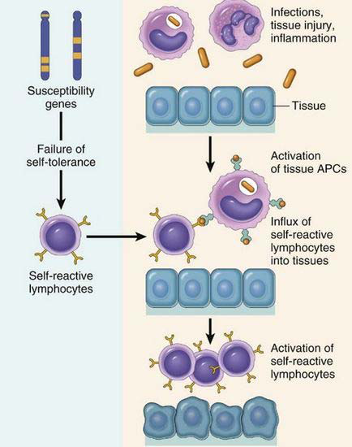
Vraag 45
Amyloïdose ten gevolge van een lang bestaande auto-immuunziekte berust vooral op accumulatie van…
Vraag 46
Welke auto-immuunziekte wordt hier getoond?
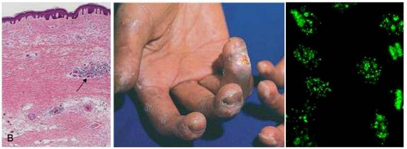
Vraag 47
Waardoor ontsnapt het HIV virus zo gemakkelijk aan onze natuurlijke adaptieve immuunrespons? Door zijn…
Vraag 48
Wat kenmerkt de lange asymptomatische fase van (het natuurlijk beloop) van een HIV-infectie?
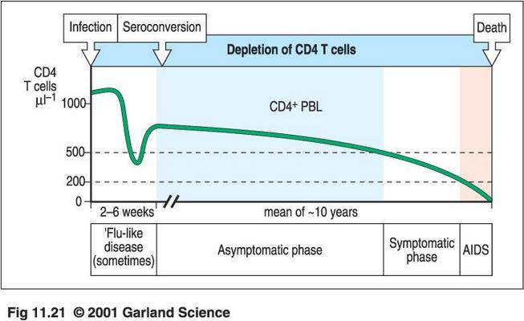
Vraag 49
Patiënten met een deficiëntie in het MHCII molecuul hebben geen…
Vraag 50
In de afwezigheid van IFNγ zijn patiënten slecht in staat om…
Vraag 51
Een patiëntje komt bij de dokter met chronische candida-infectie in de mond, huid, en de nagels. De dokter constateert uiteindelijk dat zij aan de erfelijke ziekte auto-immuun polyendocrinopathy-candidiasis-ectodermal dystrophy (APECED) leidt. Waardoor wordt deze ziekte veroorzaakt?
Vraag 52
Geïnduceerde pluripotente stamcellen (iPS-cellen) zijn genetisch gemanipuleerde cellen. Van welke weefsels zijn deze cellen afkomstig?
Vraag 53
Waarop berust angiogenese?
Vraag 54
Remodellering van reactief gevormd bindweefsel vereist collageen-aanmaak en -afbraak. Welk signaalmolecuul bevordert de collageenaanmaak?
Vraag 55
Waarop berust keloïd?
Vraag 56
Welk type ontsteking ziet u op deze foto van een preparaat, afkomstig uit het cursus-COO ontstekingen?
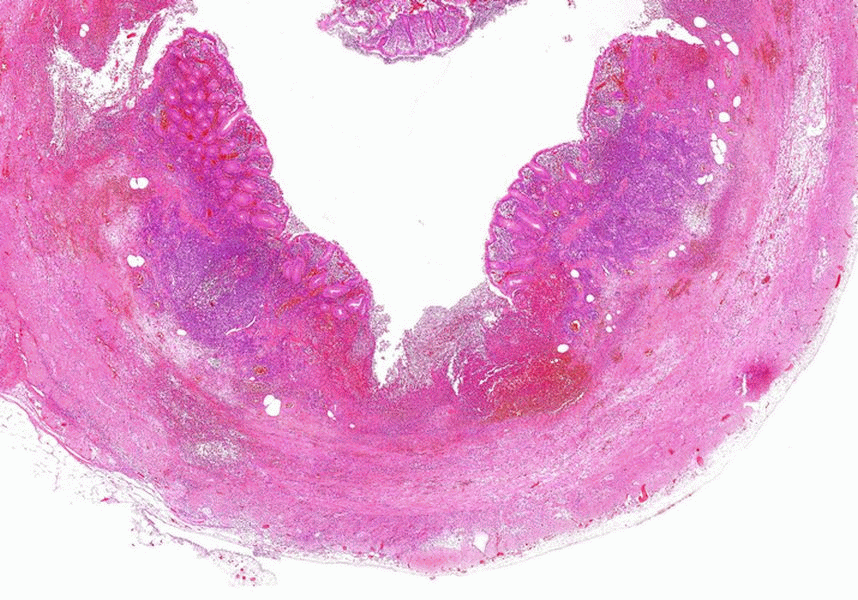
Vraag 57
Wat ziet u op deze foto van een preparaat, afkomstig uit het cursus-COO ontstekingen?
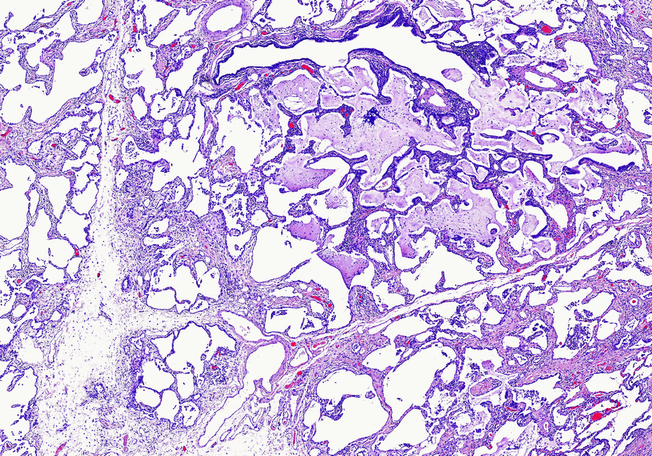
Vraag 58
Immunotherapie bij kankerpatiënten wordt gezien als een veelbelovende therapie. Maar wat houdt een immuuntherapie eigenlijk in? Dit is een therapie waarbij…
Vraag 59
Antibody dependent cytotoxicity (ADCC) is een methode waarmee therapeutische antilichamen kankercellen in een patiënt kunnen verwijderen.
Vraag 60
Een 25-jarige man bezoekt de huisarts met klachten over een branderig gevoel bij het plassen. De huisarts schat de vooraf kans op chlamydia op 10%. Chlamydia is een heel besmettelijke seksueel overdraagbare aandoening die wordt veroorzaakt door de bacterie Chlamydia trachomatis. De huisarts neemt materiaal af voor een test op chlamydia trachomatis en de uitslag is positief. De sensitiviteit van de test is 88% en de specificiteit 98%.
Bereken de achteraf kans op chlamydia trachomatis voor deze man, afgerond op een heel percentage (dus zonder cijfers achter de komma).
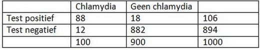
Vraag 61
Een 22-jarige man bezoekt de huisarts omdat hij al twee weken keelpijn en koorts heeft. De huisarts schat de kans dat Jan lijdt aan mononucleosis infectiosa op 25%. Hij laat bloedonderzoek doen met de IgM-EBV test. De IgM-EBV test heeft een sensitiviteit van 96% en een specificiteit van 100% voor mononucleosa infectiosa. De testuitslag is negatief.
Bereken de achteraf kans op mononucleosis infectiosa voor deze man afgerond op een percentage zonder decimalen (dus zonder cijfers achter een komma).
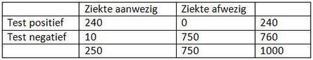
Vraag 62
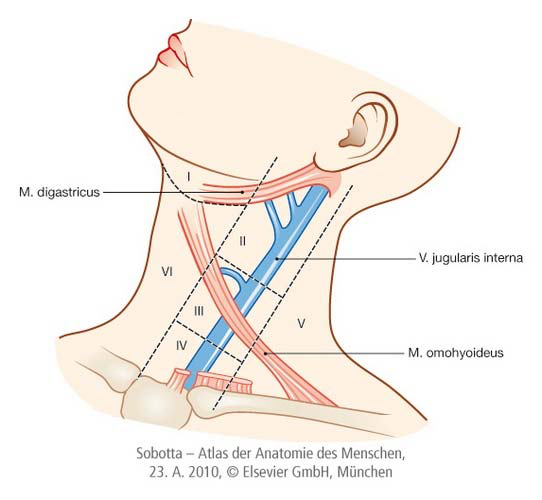
U ziet een afbeelding van de verschillende klinische halsregio’s. In welke regio bevinden zich de volgende structuren?
Sleep een optie naar de bijbehorende rij, of tik eerst op een kaart en dan op een rij.
Glandula submandibularis
Sleep hier naartoe
Nervus accessorius
Sleep hier naartoe
Schildklier
Sleep hier naartoe
Vraag 63
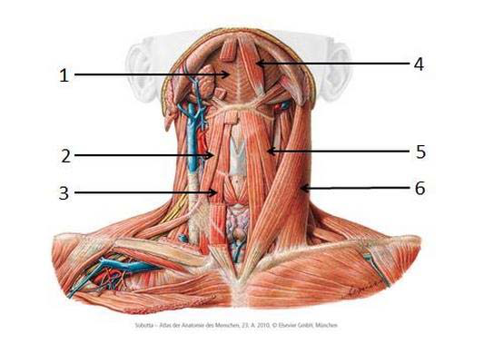
Met welk nummer worden de spieren aangeduid?
Sleep een optie naar de bijbehorende rij, of tik eerst op een kaart en dan op een rij.
M. digastricus
Sleep hier naartoe
M. sternocleidomastoideus
Sleep hier naartoe
M. sternothyroideus
Sleep hier naartoe
Vraag 64
De glandula parotis is onder normale omstandigheden nooit te zien of te voelen. Enkelzijdige en snelle vergroting is verdacht voor steenlijden of maligniteit. Wat pleit voor steenlijden?
Vraag 65
Wat past het best bij een pre-auriculair vergroot lymfkliertje?
Vraag 66
In de behandeling van vele dermatologische aandoeningen (waaronder eczeem) kunt u kiezen voor een crème of een zalf. Wanneer kunt u het beste voor een middel op basis van een zalf kiezen?
Vraag 67
Bij de behandeling van een ernstige allergische (anafylactische) reactie dient men dexamethason toe. Wat is de belangrijkste reden om dit te doen?
Vraag 68
Een patiënt van 53 jaar komt bij de huisarts omdat hij sinds drie dagen een pijnlijke gezwollen elleboog rechts heeft. De huisarts denkt aan jicht. Welke extra-articulaire bevinding ondersteunt de diagnose jicht?
Vraag 69
Een patiënt van 71 jaar komt bij de huisarts met een pijnlijke rode gezwollen knie sinds 2 dagen. Welke twee gegevens maken jicht als oorzaak onwaarschijnlijker?
Meerdere antwoorden mogelijk.
Vraag 70
Een patiënt van 45 jaar komt bij de huisarts. Zij heeft sinds 4 weken gezwollen lymfeklieren in de hals. Welke twee bevindingen vergroten de kans op een maligniteit het meest? De patiënt heeft…